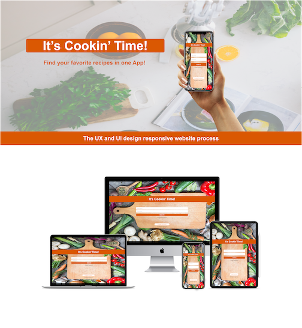
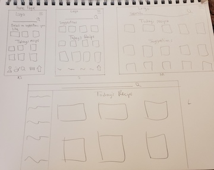
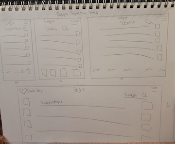
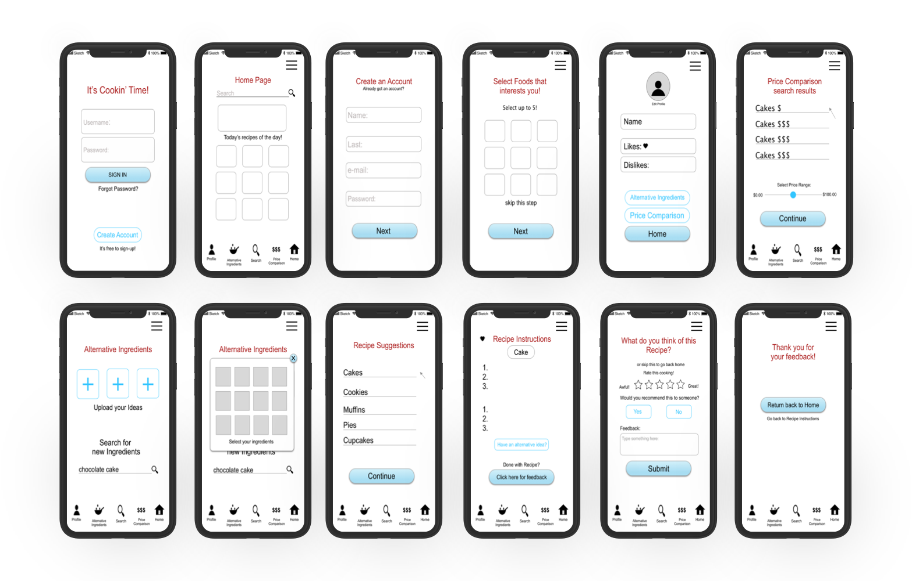
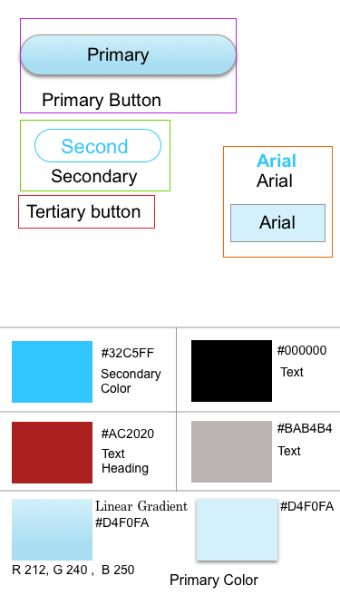
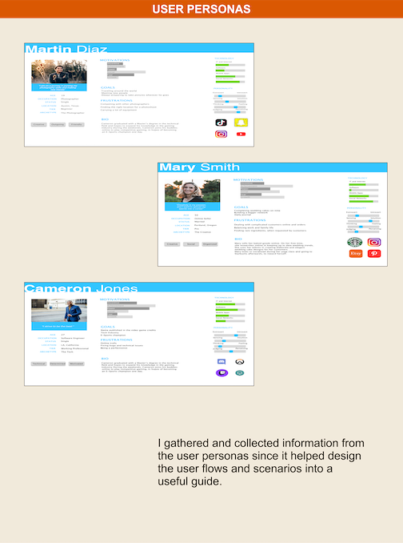
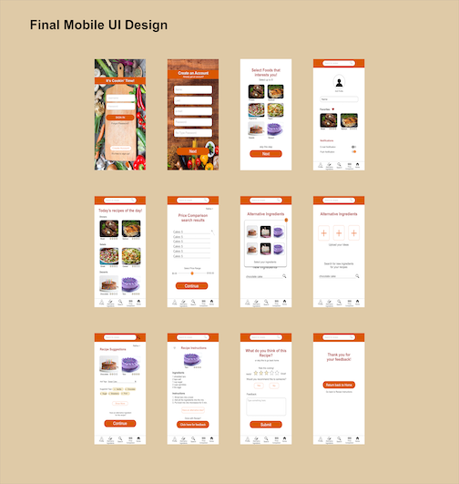
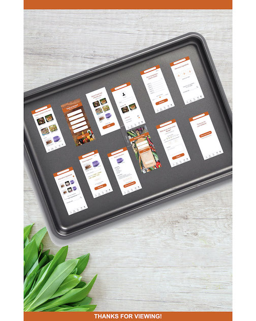

Hello! I'm a UI UX designer with a background in the game testing and data entry industry where I gained skills on focusing project details and communication within team members. I transitioned into the UI and UX field because I am fascinated by stories and visual arts. My goal is to design and research in meeting the needs of the user.
Find your favorite recipes in one App! I want this app to help users find recipes within their budget plans as well as finding substitute ingredients that meet their cooking needs. After researching I chose warm like colors such as orange because it reminds people of Thanksgiving.
It's Cookin' Time! - Find your favorite recipes in one App!

User flows
New User: As a new user, I want to find a recipe plan around my schedule.
Create Account > Account Made > A list of Likes or Dislikes in recipes > Home Page
Returning User: As a returning user, I am looking for a substitute ingredient for a chocolate cake recipe.
Login > Profile > Home Page > Search > Recipe Instructions > Send Feedback (Optional) > Home Page
Sketched low fidelity wireframes for recipe planner


Wireframes:
High Fidelity Wireframes

My first moodboard choice before finalizing

I was satisfied adding the additional icons onto my recipe and making them smaller than before. What took me the longest was changing the whole color palette. The light blue and red do stand out but it did not give the recipe food feeling. I swap the colors for warm fall like colors such as orange and yellow.
User Testing:
In high fidelity wireframes
Tasks for Users
1. Compare prices under the Price Comparison search engine:
Find an affordable cake recipe to make.
2. Setting up a substitute filter:
Find an alternative ingredient for chocolate for your cake recipe
3. As a new user, you are creating a new account.
Issues and Suggestions
Complications within the new account steps.
Users can skip picking their favorite foods and go straight to their profiles, after registering.
Providing a ‘skip’ button option.
The users want a ‘skip’ option instead of going back and forth in the recipe app pages.
User is confused with the ‘Alternative Ingredients’ with the ‘Price Comparison’.
They are different from each other because if the user wants to swap basil for oregano, then this becomes an ‘Alternative Ingredient’ instead of ‘Price Comparison’.
User Personas - I gathered and collected information from the user personas since it helped design the user flows and scenarios into a useful guide.

Final Mobile UI Design for "It's Cookin' Time!"

Recipe Planner Mockup

Purpose: “It’s Cookin’ Time” is a recipe app created for users who want to find affordable or alternative ingredients.
Objective: The objective is to help users find recipes within their budget plans as well as finding substitute ingredients.
My Role: UX and UI Designer
Duration: April 2020 - May 2020
Steps:
Decided on a recipe app for cooking app
Researched similar apps such as FoodNetwork and Recipe
Designed mood board
Created user flow for both new and returning users
Designed Low Fidelity wireframes
Researched apps through iOS and Android mobile platforms
Designed Mid Fidelity wireframes
Design final mockups
Conclusion:
What went well?
Using the cutting board as the login so the user knows it is a food related app. The warm orange color reminds you of Thanksgiving.
What didn’t go well?
Picking out the right colors for the app. My mid wireframes were light blue and red. After testing out the colors, I swap to orange and yellow colors to see which fit better for the app. It was difficult to pick out which color palettes that I want to use.
What could be improved?
Adding in the small details within the pages such as the “Price Comparison” and “Alternative Ingredients”.
Thanks for viewing!
About Christy
Video games are a huge hobby of mine. I had experience working in the video gaming industry as a former game tester and quality analyst. I’ve learned how to deal with quality assurance and conducting reports to software engineers. I am passionate about creating designs and simplifying things for people’s needs. As a new UI/UX designer joining the design industry, I want to create products and apps for users as it will make things easier for their daily activities.